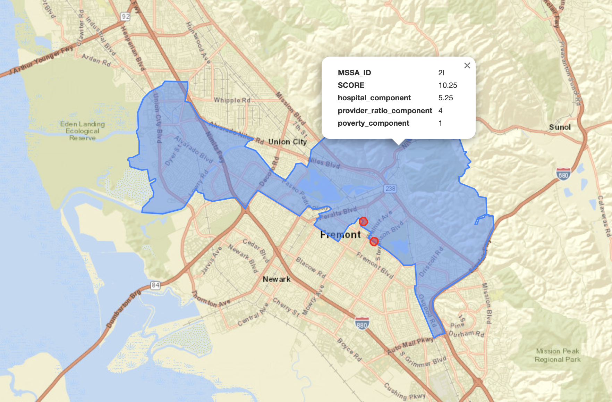
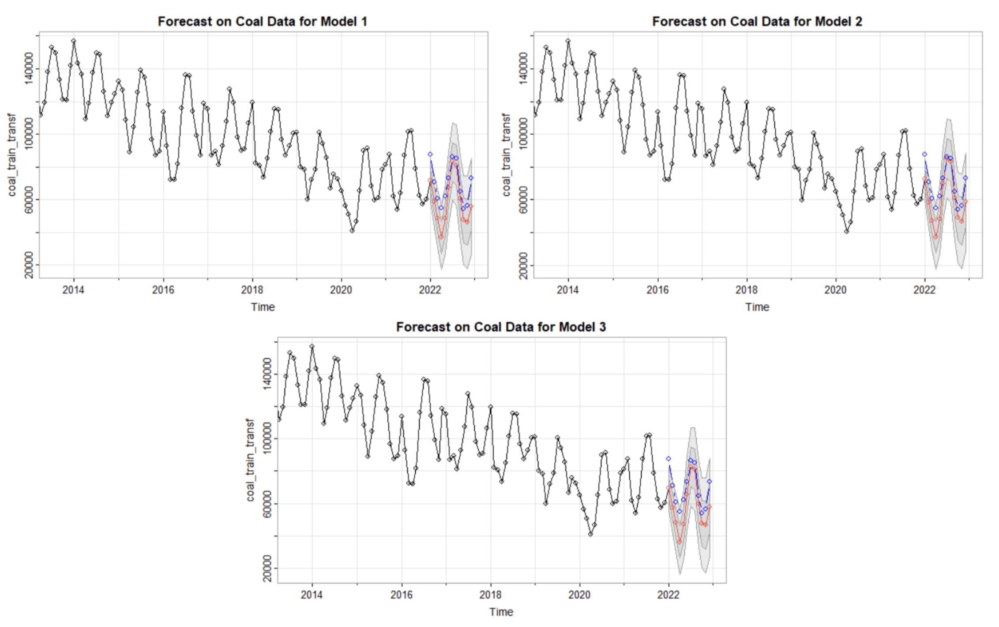
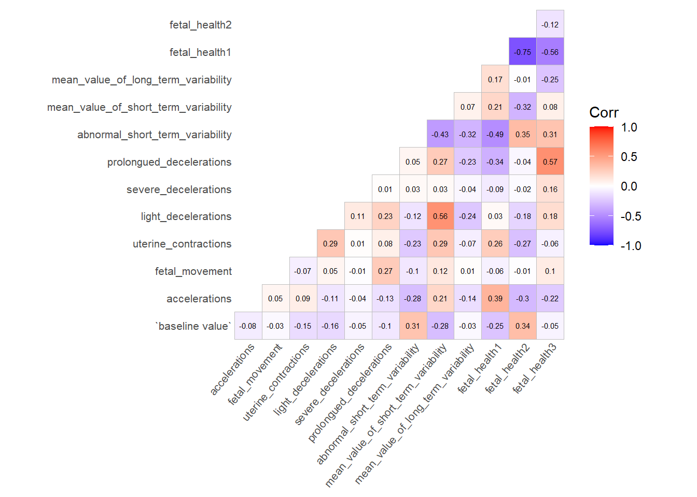

Projects
MSSA Scoring Algorithm

Python
GeoServer
ArcGIS
GeoPandas
Spatial Analysis
Healthcare
Scoring Medical Study Service Area (MSSA) scoring algorithm using spatial analytics to determine areas in California that are in need of medical resources. Powered by GeoPandas and Folio, this project was made as a result of the culmination of skills I obtained from my internship at Picarro.
U.S. Electricity Production Forecasting in R

R
Time Series Forecasting
SARIMA
Energy
A comprehensive analysis and forecasting of the U.S.'s Various Electricity production methods. Usage of SARIMA models in R are used to forecast future prospects of electricity production methods to gain insight into the potential future.
Fetal Health Classification in R

R
Machine Learning
Classification
Healthcare
A survey of several machine learning models in R to determine the most accurate model to predict fetal mortality outcomes given cardiotocography (CTG) data.